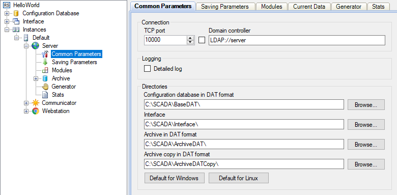

El Server gestiona los archivos de datos, realiza cálculos matemáticos y provee información a las aplicaciones cliente. Escribe datos en su archivo principal y simultáneamente crea una copia de respaldo.

Figura 1. Cuadro para configurar al Server
El Server trabaja como un servicio. No tiene interfaz de usuario. Opera continuamente en el trasfondo, independientemente de que el usuario haya abierto sesión o no. El cuadro gráfico para configurar al Server está integrado en la aplicación Administrator (Administrador). (Ver Figura 1).
La aplicación monitoriza las conexiones del usuario y verifica sus derechos mientras procesa las solicitudes y pasa los comandos. La información sobre el estado de la aplicación y sobre las acciones realizadas se almacena en archivos de registro en texto. El servidor está diseñado para ejecutarse sin parar.
Se dispone de módulos de servidor adicionales que permiten ampliar la funcionalidad del Server de acuerdo con las necesidades del cliente.